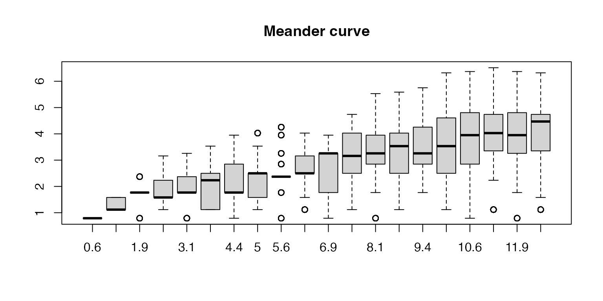

Locality of various curves
Zuguang Gu (z.gu@dkfz.de)
2024-07-25
Source:vignettes/locality.Rmd
locality.RmdFor the Hilbert curve, calculate their Euclidean distance in the 2D space.
p = hilbert_curve(level = 5)
library(ComplexHeatmap)
library(colorRamp2)
d_hc_2D = dist(p)
col_fun = colorRamp2(c(0, 20, 40), c("blue", "white", "red"))
ht1 = Heatmap(as.matrix(d_hc_2D), name = "dist",
col = col_fun, column_title = "Hilbert curve",
cluster_rows = FALSE, cluster_columns = FALSE,
show_row_names = FALSE, show_column_names = FALSE)Similar for the H-curve, the Peano curve and the Meander curve.
p = h_curve(iteration = 3)
d_h_2D = dist(p)
ht2 = Heatmap(as.matrix(d_h_2D), name = "dist",
col = col_fun, column_title = "H-curve",
cluster_rows = FALSE, cluster_columns = FALSE,
show_row_names = FALSE, show_column_names = FALSE)
p = peano_curve(level = 3)
d_pe_2D = dist(p)
ht3 = Heatmap(as.matrix(d_pe_2D), name = "dist",
col = col_fun, column_title = "Peano curve",
cluster_rows = FALSE, cluster_columns = FALSE,
show_row_names = FALSE, show_column_names = FALSE)
p = meander_curve(level = 3)
d_me_2D = dist(p)
ht4 = Heatmap(as.matrix(d_me_2D), name = "dist",
col = col_fun, column_title = "Meander curve",
cluster_rows = FALSE, cluster_columns = FALSE,
show_row_names = FALSE, show_column_names = FALSE)
plot1 = grid.grabExpr(draw(ht1))
plot2 = grid.grabExpr(draw(ht2))
plot3 = grid.grabExpr(draw(ht3))
plot4 = grid.grabExpr(draw(ht4))
pushViewport(viewport(x = 0, y = 0.5, width = 0.5, height = 0.5, just = c("left", "bottom")))
grid.draw(plot1)
popViewport()
pushViewport(viewport(x = 0.5, y = 0.5, width = 0.5, height = 0.5, just = c("left", "bottom")))
grid.draw(plot2)
popViewport()
pushViewport(viewport(x = 0, y = 0, width = 0.5, height = 0.5, just = c("left", "bottom")))
grid.draw(plot3)
popViewport()
pushViewport(viewport(x = 0.5, y = 0, width = 0.5, height = 0.5, just = c("left", "bottom")))
grid.draw(plot4)
popViewport()
We directly compare the distances in 1D axis and 2D curve:
par(mfrow = c(2, 2))
d_hc_1D = dist(1:4^5)
plot(d_hc_1D, d_hc_2D/2^5, pch = 16, cex = 0.2, col = "#00000010", main = "Hilbert curve",
xlab = "Distance in 1D axis", ylab = "Distance in 2D curve")
d_h_1D = dist(1:4^5)
plot(d_h_1D, d_h_2D/2^5, pch = 16, cex = 0.2, col = "#00000010", main = "H-curve",
xlab = "Distance in 1D axis", ylab = "Distance in 2D curve")
d_pe_1D = dist(1:9^3)
plot(d_pe_1D, d_pe_2D/9^3, pch = 16, cex = 0.2, col = "#00000010", main = "Peano curve",
xlab = "Distance in 1D axis", ylab = "Distance in 2D curve")
d_me_1D = dist(1:9^3)
plot(d_me_1D, d_me_2D/9^3, pch = 16, cex = 0.2, col = "#00000010", main = "Meander curve",
xlab = "Distance in 1D axis", ylab = "Distance in 2D curve")
gap_dist = function(p, gap = 1) {
n = nrow(p)
loc1 = p[seq(1, n-gap), , drop = FALSE]
loc2 = p[seq(1+gap, n), , drop = FALSE]
sqrt( (loc1[, 1] - loc2[, 1])^2 + (loc1[, 2] - loc2[, 2])^2 )
}
par(mfrow = c(1, 2))
p = hilbert_curve(level = 6)
boxplot(lapply(1:20, function(i) gap_dist(p, i)), main = "Hilbert curve")
p = h_curve(iteration = 4)
boxplot(lapply(1:20, function(i) gap_dist(p, i)), main = "H-curve")
r = 9^4/4^6
p = peano_curve(level = 4)
boxplot(lapply(1:20, function(i) gap_dist(p, i)/sqrt(r)), main = "Peano curve", names = round(1:20 /r, 1))
p = meander_curve(level = 4)
boxplot(lapply(1:20, function(i) gap_dist(p, i)/sqrt(r)), main = "Meander curve", names = round(1:20 /r, 1))
plot(NULL, xlim = c(1, 20), ylim = c(0, 8), xlab = "gaps", ylab = "gap dist")
p = hilbert_curve(level = 6)
lines(1:20, sapply(1:20, function(i) mean(gap_dist(p, i))), col = 2)
p = h_curve(iteration = 4)
lines(1:20, sapply(1:20, function(i) mean(gap_dist(p, i))), col = 7)
p = peano_curve(level = 4)
lines(1:32 /r, sapply(1:32, function(i) mean(gap_dist(p, i)/sqrt(r))), col = 3)
p = meander_curve(level = 4)
lines(1:32 /r, sapply(1:32, function(i) mean(gap_dist(p, i)/sqrt(r))), col = 4)
legend("topleft", legend = c("hilbert", "h", "peano", "meander"), lty = 1, col = c(2, 7, 3, 4))